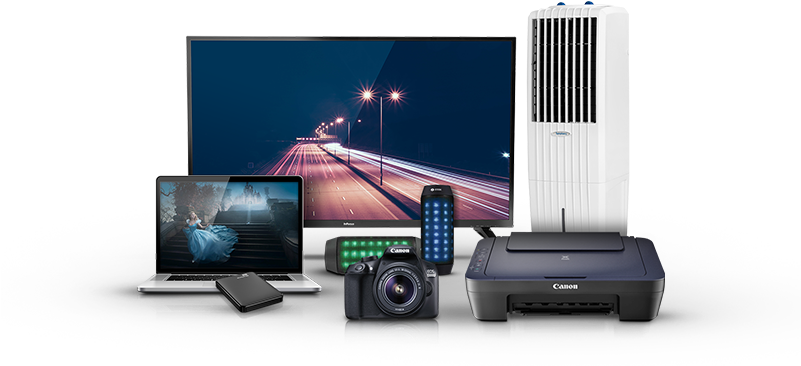

<swiper [spaceBetween]="30" [centeredSlides]="true" [autoplay]="{
    delay: 2500,
    disableOnInteraction: true
  }" [pagination]="{
    clickable: true
  }" [navigation]="true" class="mySwiper" [loop]="true">
  <ng-template swiperSlide class="first-img">
    <div>
      
    </div>
  </ng-template>

  <ng-template swiperSlide class="second-img">
    <div>
      </div>
  </ng-template>
  <ng-template swiperSlide class="third-img">

    <div>
      
    </div>
  </ng-template>
</swiper>
